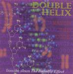

Home Artist links

| Artist: | Double Helix |
| Title: | Watch The Code |
| Label: | self produced 7SS 037 |
| Length(s): | 4 minutes |
| Year(s) of release: | 2000 |
| Month of review: | 07/2000 |
Line up
Sandy Leigh - vocals, and more
Jill Arroway - vocals, and more
Tracks
Summary
A female duo with a single that was released on the day that the
draft of the Genetic Code was published. They were also to perform the
song at the ceremony, so this track can be considered the anthem.
One of them was a member of the English band Solstice.
The music
The first and last track on this single is not a good one I'm afraid.
The sound is flat, the vocals (solo and harmony) are a bit too high, thin
and sometimes not in key. The drumming (computer) is varied, but for on the
whole there's not very much happening. Not something I can recommend.
Conclusion
See above.
© Jurriaan Hage